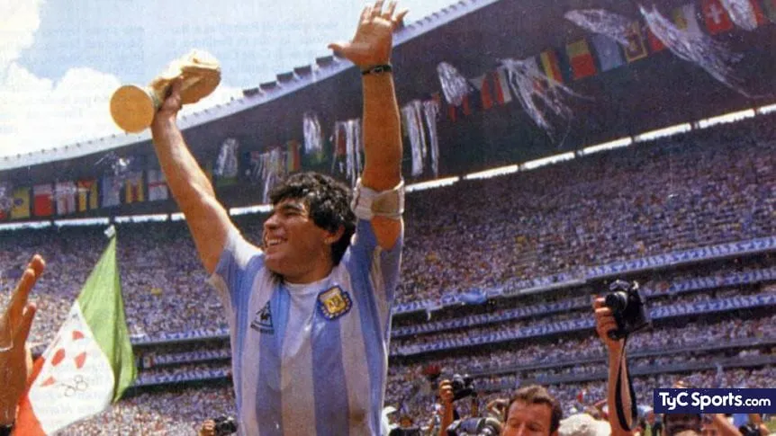
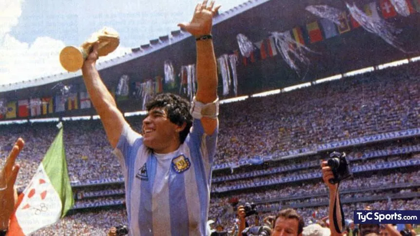

Inicio de la Copa Mundial de Futbol
En esta sección, exploraremos los primeros pasos y el contexto histórico que llevó al nacimiento del mundial de Futbol. Aprenderemos cómo se gestó esta emocionante competición.

En esta sección, exploraremos los primeros pasos y el contexto histórico que llevó al nacimiento del mundial de Futbol. Aprenderemos cómo se gestó esta emocionante competición.
En esta sección, repasaremos las diferentes décadas en la historia del Mundial de Futbol y cada seleccion que domino la competición en cada época. Conoceremos las rivalidades, innovaciones técnicas y momentos emblemáticos que definieron cada era.

Exploraremos las carreras y logros de algunos de las selcciones más legendarias en la historia.
 
